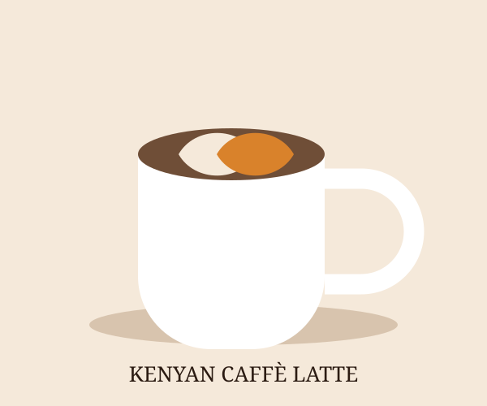
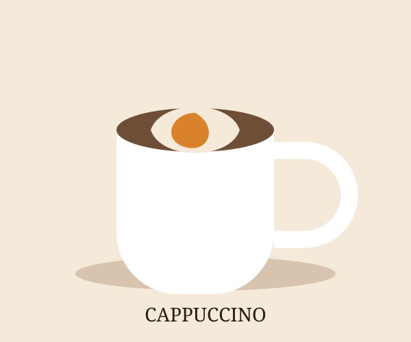
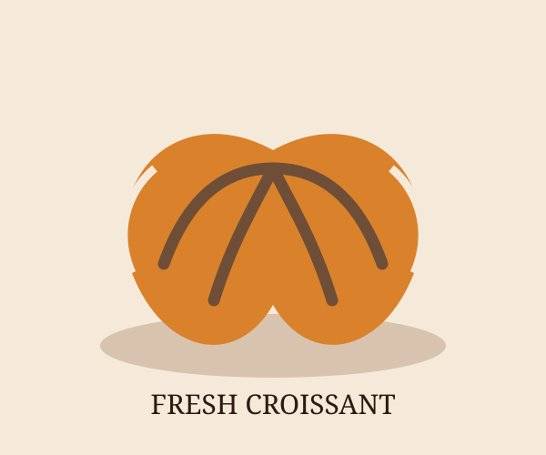

Fresh Latte
Enjoy a smooth coffee blend prepared with rich espresso and milk.
Brewed in Kenya. Served with love.
Experience the rich taste of Kenyan coffee, freshly prepared with care.
Explore Our MenuLocated in Westlands, Nairobi, Savanna Brew Café brings you freshly brewed Kenyan coffee, delicious pastries and a warm, welcoming atmosphere. Whether you are meeting friends, working or simply relaxing, we have something special for you.

Enjoy a smooth coffee blend prepared with rich espresso and milk.

A classic coffee favourite with a rich flavour and creamy finish.

Pair your favourite drink with one of our delicious bakery treats.
14 Coffee Lane, Westlands, Nairobi
Enjoy great coffee, friendly service and memorable moments.
Contact Us